前文：
本篇为察篇的后续篇，介于经常出现察和活塞同时应用，所以知识点会很相似或高度重合属于正常情况。
值得注意的是，这个理论是经验结论，仅代表贴合大部分实验结果的总结，不一定代表源码的事实，仅为各位提供一个比较接近事实的计算方式，不代表客观结果，希望能对各位有些微帮助。
所以我的理论是偏向于应用实战的，如果你只喜欢源码的刨析，建议看这些专栏：
CV7581645
CV7876046
CV10907045
cv13617717
除此之外还有一个也是接近代码的经验结论：
CV12980256
因为be几乎所有元件的宏观延时都会强制对其到rt精度，所以在应用角度分析电路时序用rt精度就完全足够了，同时也好理解。
值得注意的是，如果你硬要用gt精度来思考的话，根据现在的源码理论，一些常被理解的更新阶段会和rt精度错位，我猜测是红石刻和非红石刻导致的(具体请看我上面分享的专栏)
此专栏仅对BE基岩版(bedrock)有效，切勿和je(java)的延时理论混淆。
我将继续用红色字体表示重要结论。
察篇传送门：
[BE理论]观察者的宏观延时计算方法 站内专栏 »下文出现的“0t”字眼指在计算时不计算此元件延时，不是你们泛指的比1t脉冲还要短的脉冲长度。
本文是结合了前人经验，作品经验，无数实验的结果，将这些结合起来试图寻找到一个能解释大部分事实的结论，但理论只注重事实，不注重本质，所以可能会有一些地方解释的模糊，请谅解。但我觉得这篇还要加上示例和分析，已经算是保姆级的讲解了。
本篇大致结构：
活塞运动延时和cd概念
活塞推拉方块更新的运用电路
收录的已知活塞不稳情况
一些比较杂的问题试图理论解释
正文：
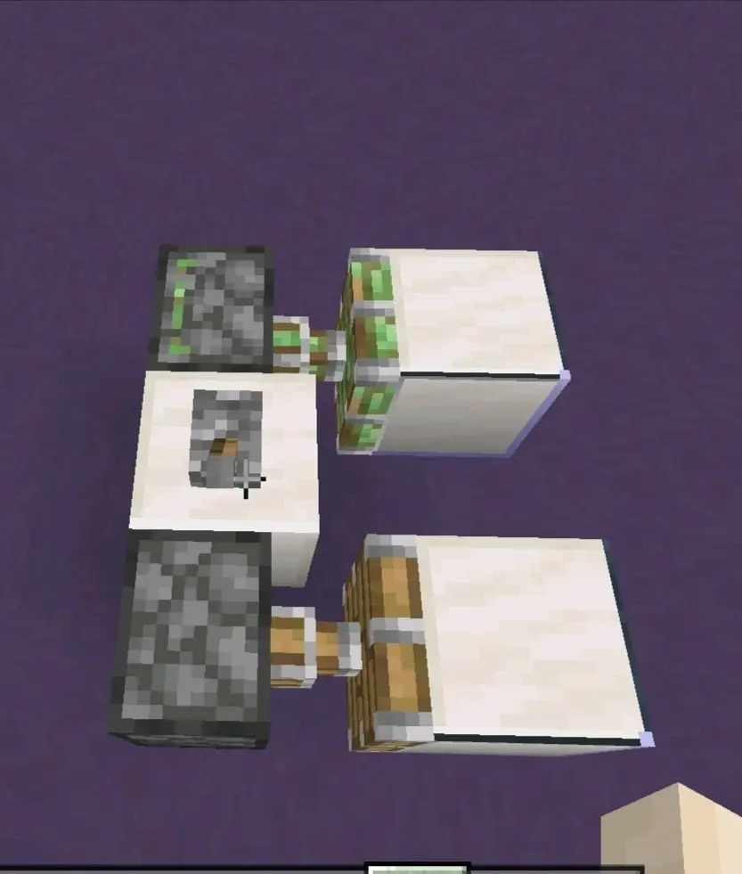
活塞正在推出
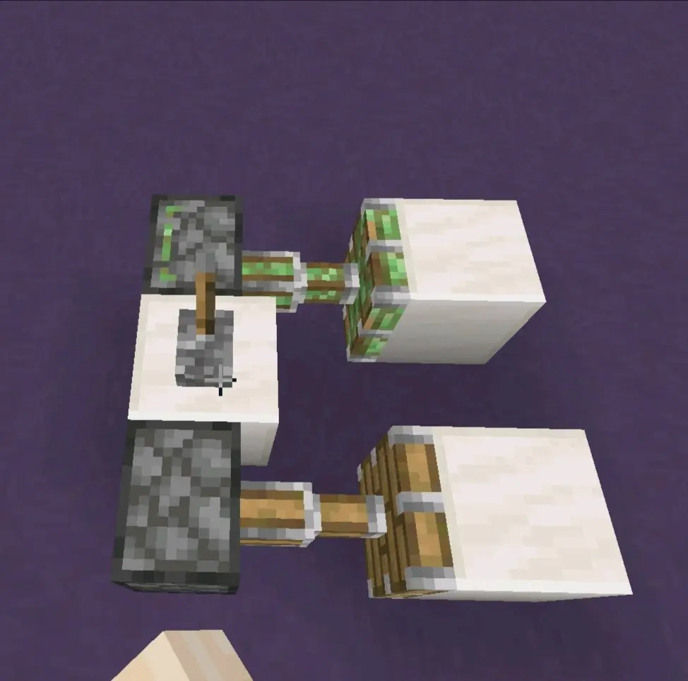
活塞推出完成
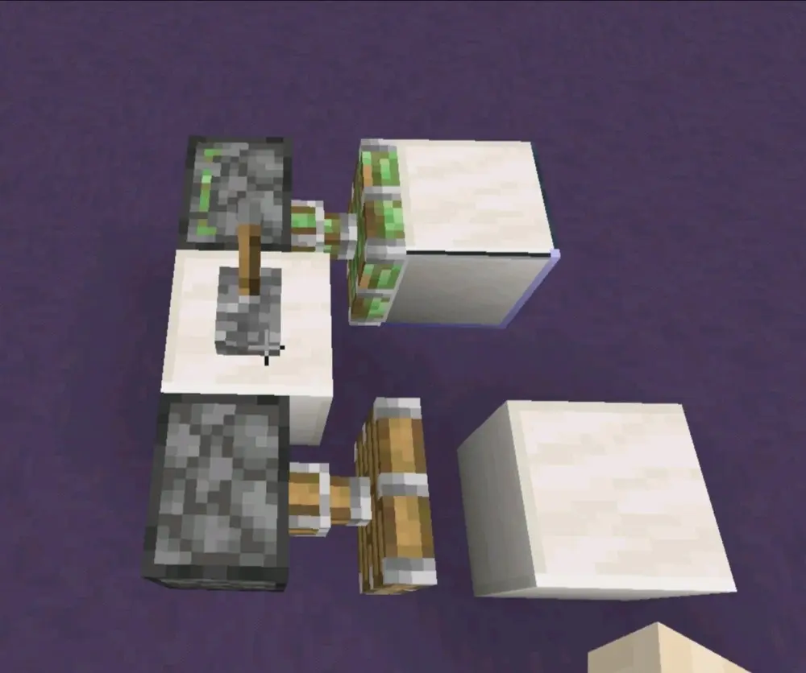
活塞正在收回
这是慢动作下的活塞运动，可以发现，正好在一格方块的中间（对于现在而言就是mb转b的过程），因为已经知道的是活塞运动的固有延时是1rt，所以这推到一半的客户端动画应该是1gt（2gt=1rt）。
rt=redstonetick=红石刻（13-14年的概念，请勿和现在的源码理论中的红石刻混淆）
gt=gametick=游戏刻
1rt=0.1s
1gt=0.05s
1s=10rt=20gt
先来跟大家扯一扯一个经常出现问题：
为什么大家觉得基岩版的活塞慢?有没有比1t脉冲输入还要快的运动?
实际上基岩版活塞的慢其实是因为存在一个让人哭笑不得的概念，那就是“冷却时间”，简称cd
对于现在的源码理论来说，cd这个概念已经过时了，完全是因为当时理论不成熟时，对于一个游戏中直观存在的概念做的抽象总结，实际上我们分析@hhhxiao_的源码理论后可以发现，所谓的cd就是mb转b后的那个红石刻，在下一次运动也得等到下一个红石刻才能开始b转mb，你当然可以理解成有cd也可以没有cd，因为代码写死的运行规律，不是mojang刻意加的机制。
来看看1t脉冲输入给活塞的运动：
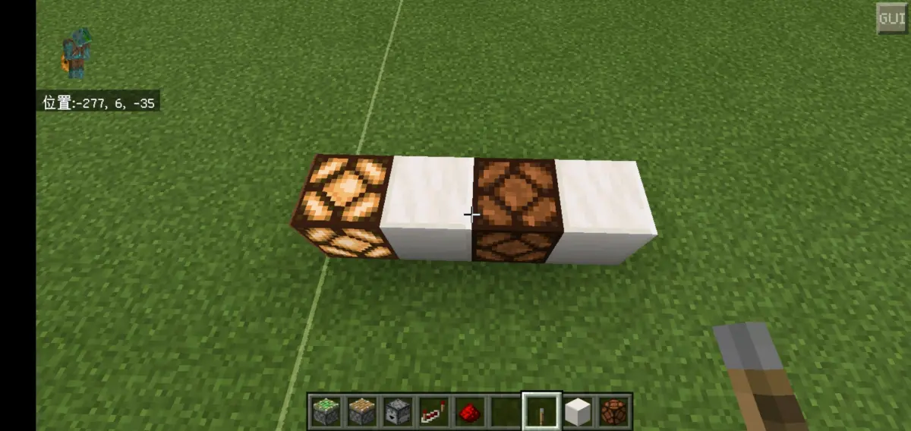
我们把亮的红石灯代表活塞推出，灭的红石灯代表活塞收回，2个石英块代表cd
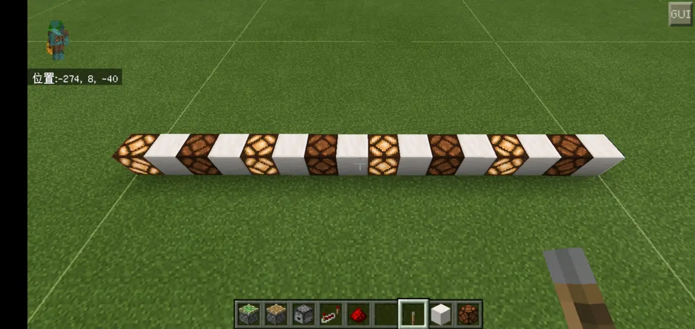
将一个最快周期累加
用文字表示是：
第1rt上沿活塞开始推出 第1rt下沿活塞推出完成
第2rt冷却时间cd活塞保持推出状态
第3rt上沿活塞开始收回 第3rt下沿活塞收回完成
第4rt冷却时间cd活塞保持收回状态
注意：如果你是源码分析玩家，或者你使用命令方块输出游戏时间，那么此理论就会因为更新阶段错位导致认为不严谨。
可以发现，因为cd无法被消除，一个活塞的推拉速度理论极限周期就是4t或者说0.4s，不能再快了，所以当一个足够合适的时钟接入活塞，活塞运动的最快频率是2.5个推拉/s；这里演示的是短脉冲的情况，在持续信号通断也存在cd。
活塞进入cd状态时活塞不响应任何信号通断，保持它该有的推出/收回状态。
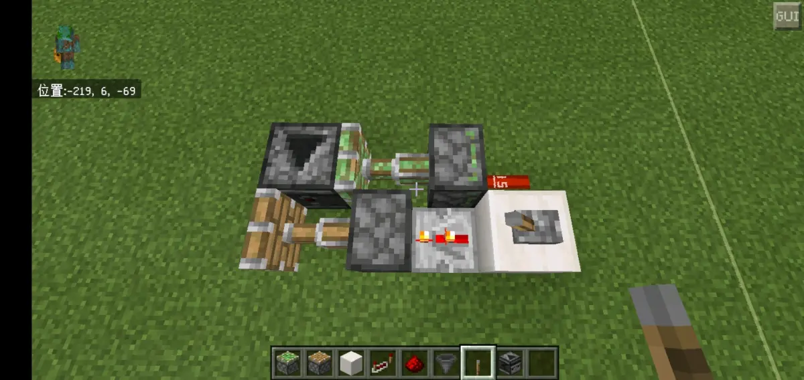
拉杆拉回，普通活塞不会被激活推出。
这是一个很直观的电路可以直接证明活塞收回的cd是否存在：
普通活塞路：中继器2rt+普通活塞1rt=3rt
察路：拉杆接入启动延时1rt+粘性活塞0rt+察2rt=3rt
可以看到，普通活塞在3rt的下沿被拉回了，而察路在3rt下沿到达信号，理应普通活塞被激活，但事实上不激活，因为第4rt是活塞收回的cd。
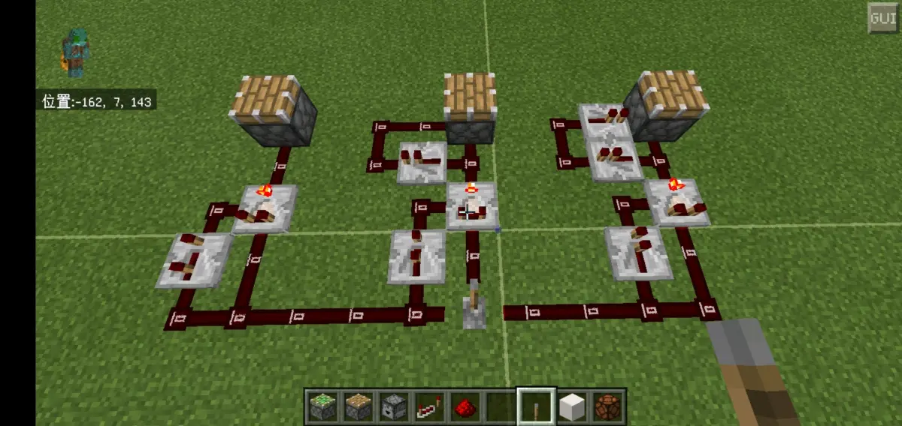
拉杆拉下，3个输出活塞同时推出，同时收回。
比较器为减法模式，使3条路开头输入不同的脉冲长度（延时和脉冲长度切勿混淆，它们是2个不同的概念）我们从左往右依次分析：（有信号作1，没信号作0表示）
第一路开头脉冲长度3rt：
第二路开头脉冲长度2rt：
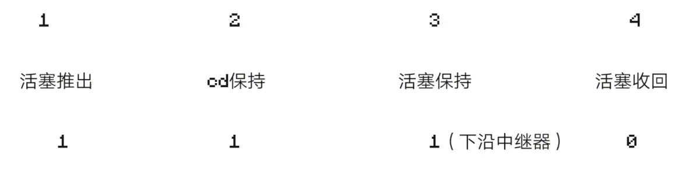
第三路开头脉冲长度1rt：
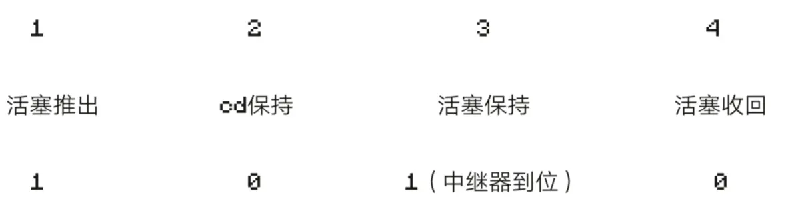
可以看到，虽然3路的开头输入脉冲都不同，但是输出活塞的运动都是同时的，我们重点分析2/3路，第2路输入脉冲长度2rt，第2rt以后还要等1档中继器断掉才能开始收回，所以第3rt还有信号；第3路输入脉冲长度1rt，第2rt处于cd状态所以保持推出，第3rt时原本应该活塞开始收回，但是另路的中继器正好信号到达，让活塞继续保持推出，直到信号消失后收回，这里有一个微观的解释是中继器的更新阶段比活塞早，所以在上沿中继器到达信号，活塞更新时发现它又被充能了于是继续保持推出。
因为活塞在推出后进入的cd时间是不响应任何信号通断的，所以在那个时间内有无信号没关系。
所以输入2rt以内的脉冲长度信号对活塞都是一样的运动速度，都是推-cd推-cd。
那么上面的第3路可以发现，101的信号作用于活塞让活塞能比理论最快推拉运动慢1rt，也就是推出后再慢1rt才开始收回，这就是一个活塞推出cd的典型应用，那么很自然的能想到也可以利用活塞收回cd来应用。
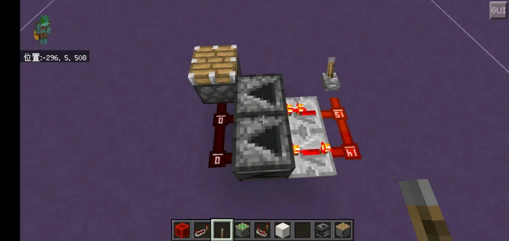
拉杆拉下，输出活塞只推拉一次，而且还是理论最快速度0.4s。
2路分别的延时：
中继器1rt+察2rt=3rt
中继器4rt+察2rt=6rt
6rt-3rt=3rt，所以活塞第一次信号推出是第4rt，第二次是第7rt。
从上往下分析：
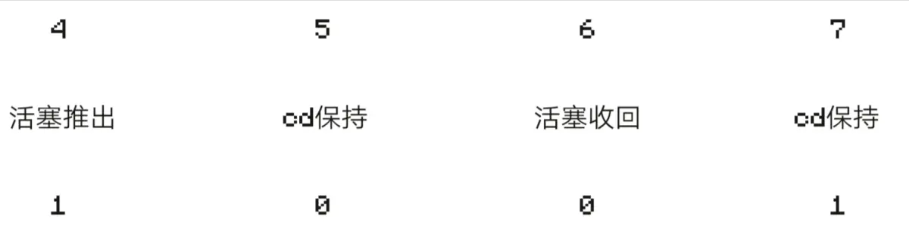
可以发现，因为输出的间隔是3rt，所以信号是1001，在第二次信号到达时正好处在活塞收回cd上，故不响应。这就是对于活塞收回cd的应用，可以把它用在一条路2次间隔3rt脉冲，一条路一次更新的情况，当然这里只是演示，电路输出做法却可以多样化（下文有提）。
那么现在来总结下2个有意思的信号101/1001，
101作用于活塞让活塞推出后再经过2rt才开始收回。
1001信号作用于活塞只推拉了一次，一次推拉周期还是理论最快0.4s。
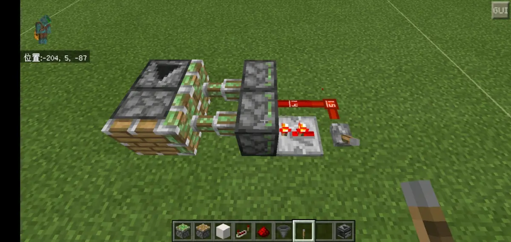
拉杆拉回，活塞被拉回后不会被激活。
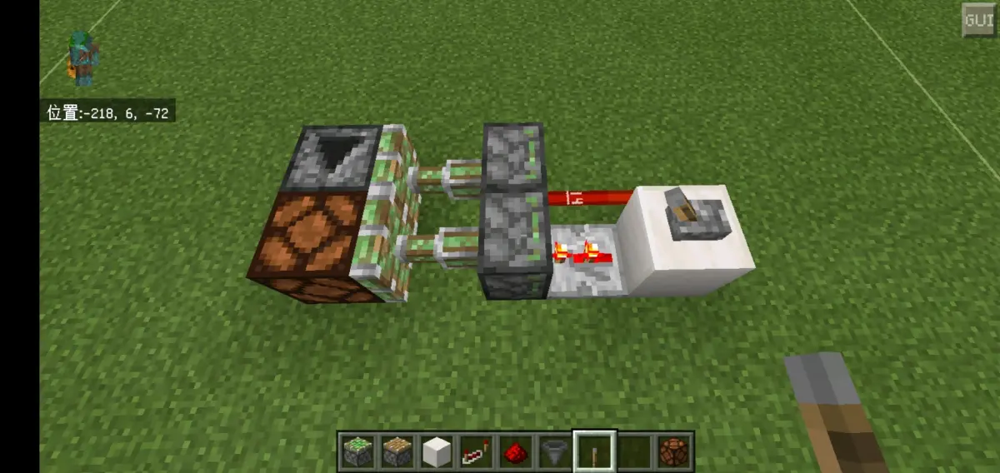
拉杆拉回，红石灯被拉回后不会被激活。
中继器路：
中继器2rt+活塞收回1rt=3rt
察路：
拉杆接入启动延时1rt+活塞收回0rt+察2rt=3rt
可以看到，活塞将活塞/红石灯拉回到位后，正好察信号到达，第4rt输出信号，被拉活塞/红石灯理应激活，但是事实是不激活。
故活塞在推和拉到位后的同步类元件也存在cd，且cd无法取消。
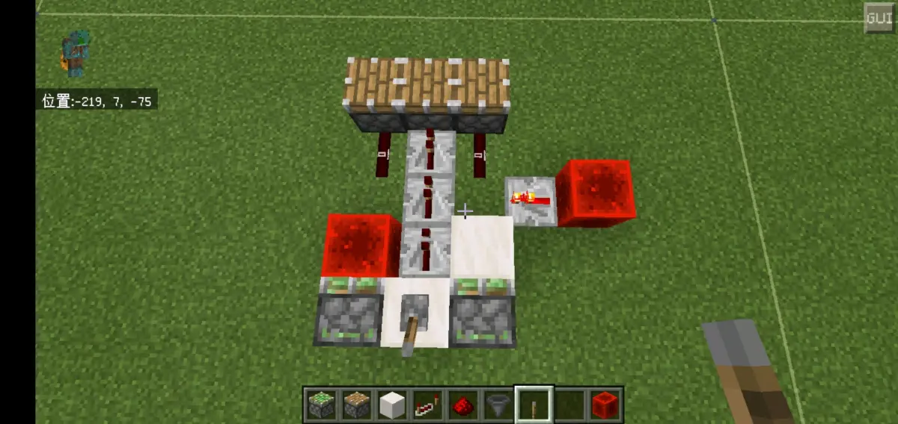
拉杆拉下，3个输出活塞同时推出
从左往右依次计算：
第一路拉杆接入启动延时1rt+活塞推出1rt+红石块到位启动延时1rt=3rt
第二路3x中继器1rt=3rt
第三路拉杆接入启动延时1rt+活塞推出1rt+石英块到位启动延时1rt=3rt
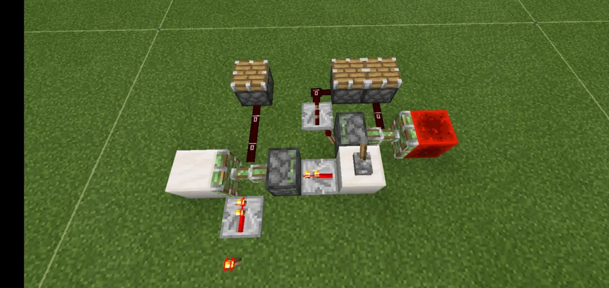
拉杆拉回，三个输出活塞同时推出
从左往右依次计算：
第一路中继器1rt+活塞收回1rt+石英块到位启动延时1rt=3rt
第二路红石火把1rt+中继器2rt=3rt
第三路拉杆接入启动延时1rt+活塞收回1rt+红石块到位启动延时1rt=3rt
故当活塞在推和拉红石块/运动到位位置有持续信号源时，推出通路的位置或拉回通路的位置有同步类元件做输出情况下，那么需要计算粘性活塞运动延时和被推信号源带来的启动延时。
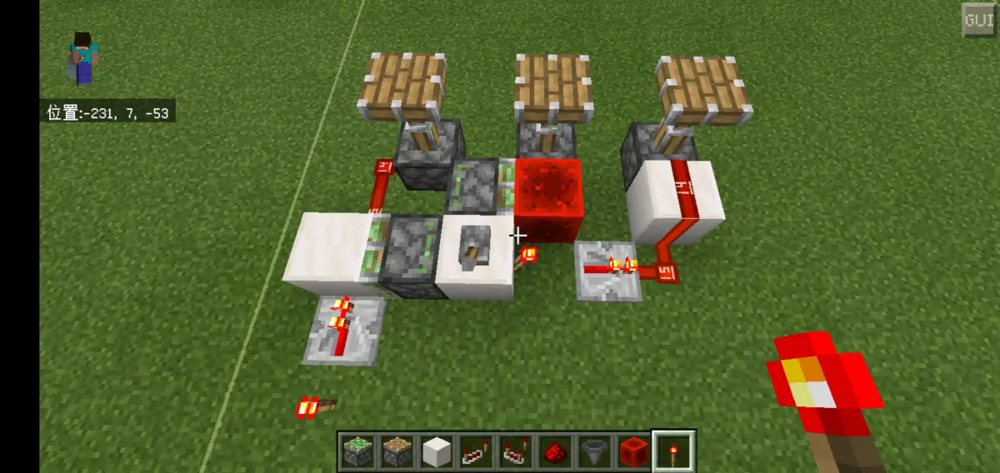
拉杆拉下，3个输出活塞同时收回。
从左往右依次计算：
第一路拉杆接入启动延时1rt+活塞推出0rt+石英块到位启动延时1rt=2rt
第二路拉杆接入启动延时1rt+活塞推出0rt+红石块到位启动延时1rt=2rt
第三路红石火把1rt+中继器1rt=2rt
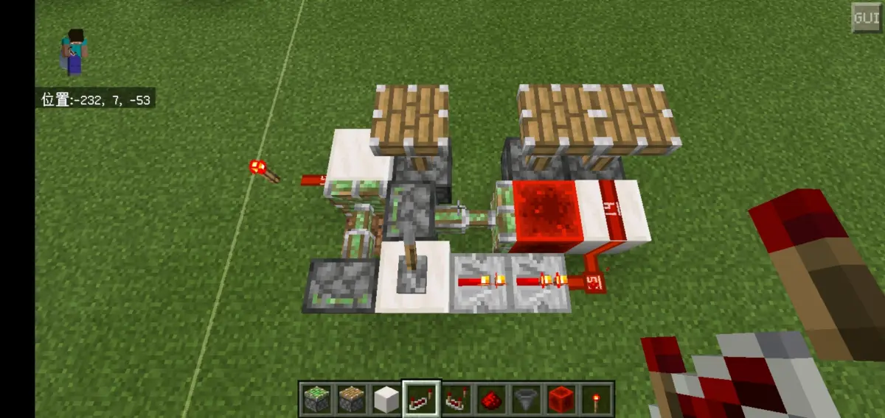
拉杆拉回，3个输出活塞同时收回。
从左往右依次计算：
第一路拉杆接入启动延时1rt+活塞收回0rt+石英块到位启动延时1rt=2rt
第二路拉杆接入启动延时1rt+活塞收回0rt+红石块到位启动延时1rt=2rt
第三路2x中继器1rt=2rt
故当活塞在推和拉红石块/运动到位位置有持续信号源时，推出断路的位置或拉回断路的位置有同步类元件做输出情况下，那么不需要计算粘性活塞的运动延时，但需要计算被推信号源带来的启动延时，可以理解成粘性活塞的运动延时和被推信号源启动延时重叠了。
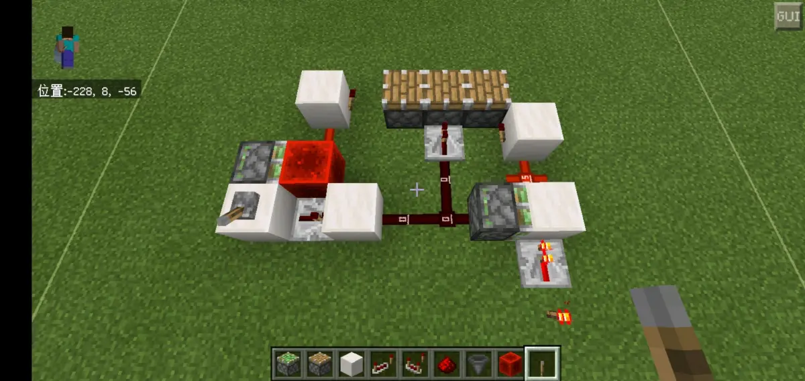
拉杆拉下，3个活塞同时推出
从左往右依次计算：
第一路拉杆接入启动延时1rt+活塞推出0rt+红石火把1rt=2rt
第二路中继器1rt+中继器1rt=2rt
第三路中继器1rt+活塞推出0rt+红石火把1rt=2rt
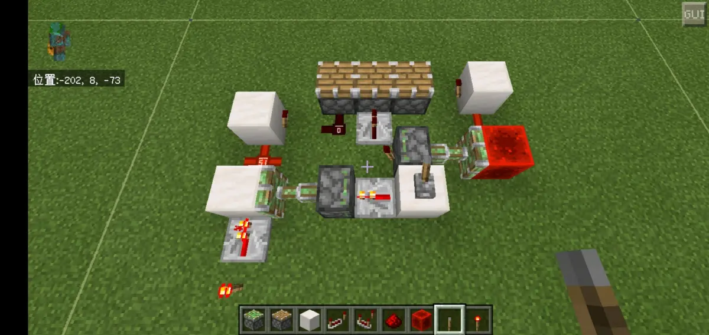
拉杆拉回，3个活塞同时推出。
从左往右依次计算：
第一路中继器1rt+活塞收回0rt+红石火把1rt=2rt
第二路红石火把1rt+中继器1rt=2rt
第三路拉杆接入启动延时1rt+活塞收回0rt+红石火把1rt=2rt
故当活塞在推和拉红石块/运动到位位置有持续信号源时，推出断路的位置或拉回断路的位置有计划刻元件做输出情况下，那么不需要计算粘性活塞的运动延时，在这个电路中可以理解成粘性活塞的运动延时和红石火把延时重叠了。
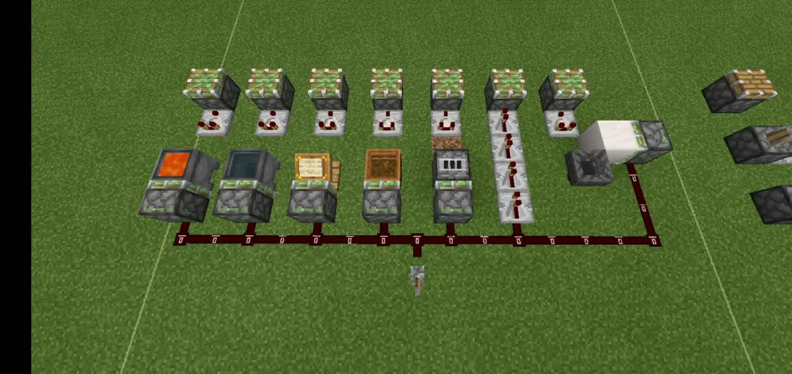
拉下拉杆，所有输出活塞同时推出。
特殊值方块路：拉杆接入启动延时1rt+活塞推出1rt+固有延时1rt+比较器1rt=4rt
中继器路：4x中继器1rt=4rt
推方块路：拉杆接入启动延时1rt+活塞推出1rt+固有延时1rt+比较器1rt=4rt
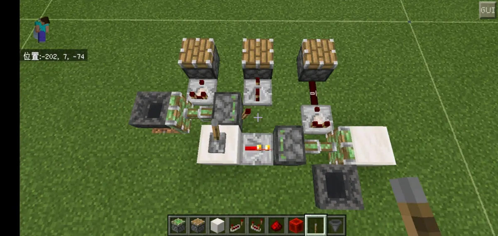
拉杆拉回，3个输出活塞同时推出。
从左往右依次计算：
第一路拉杆接入启动延时1rt+活塞收回1rt+固有延时1rt+比较器1rt=4rt
第二路红石火把1rt+中继器3rt=4rt
第三路中继器1rt+活塞收回1rt+固有延时1rt+比较器1rt=4rt
故当活塞在推和拉特殊值方块/完整方块运动到位有特殊值方块隔方块比较器检测时，推出通路的位置或拉回通路的位置有比较器检测做输出情况下，那么需要计算活塞运动延时和特殊值方块带来的固有延时。
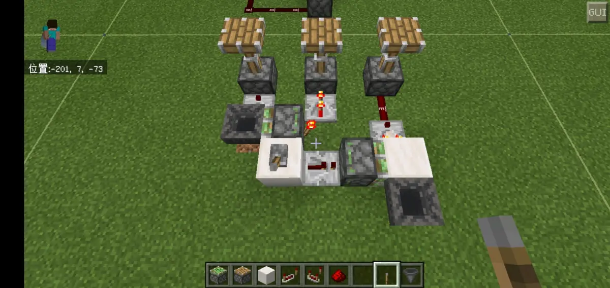
拉杆拉下，3个输出活塞同时收回。
第一路拉杆接入启动延时1rt+活塞推出0rt+固有延时1rt+比较器1rt=3rt
第二路红石火把1rt+中继器2rt=3rt
第三路中继器1rt+活塞推出0rt+固有延时1rt+比较器1rt=3rt
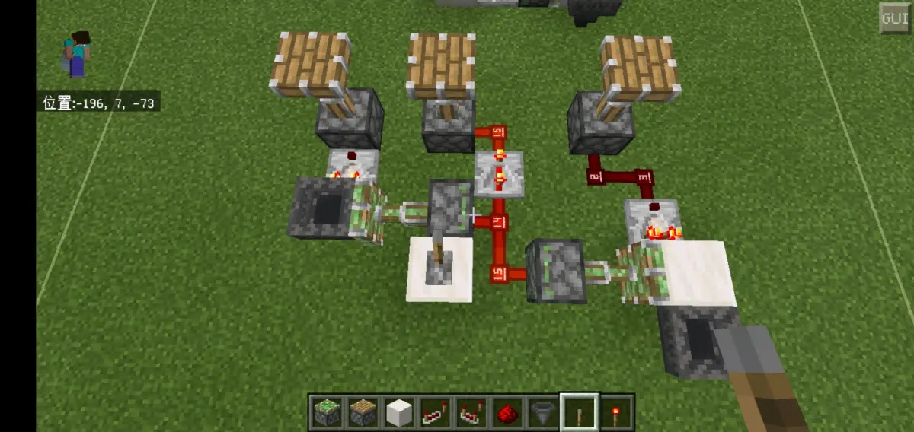
拉杆拉回，3个输出活塞同时收回。
第一路拉杆接入启动延时1rt+活塞收回0rt+固有延时1rt+比较器1rt=3rt
第二路中继器3rt=3rt
第三路拉杆接入启动延时1rt+活塞收回0rt+固有延时1rt+比较器1rt=3rt
故当活塞在推和拉特殊值方块/完整方块运动到位有特殊值方块隔方块比较器检测时，推出断路的位置或拉回断路的位置有比较器检测做输出情况下，那么不需要计算活塞运动延时，但需要计算特殊值方块带来的固有延时，可以理解成活塞运动延时和固有延时重叠了。
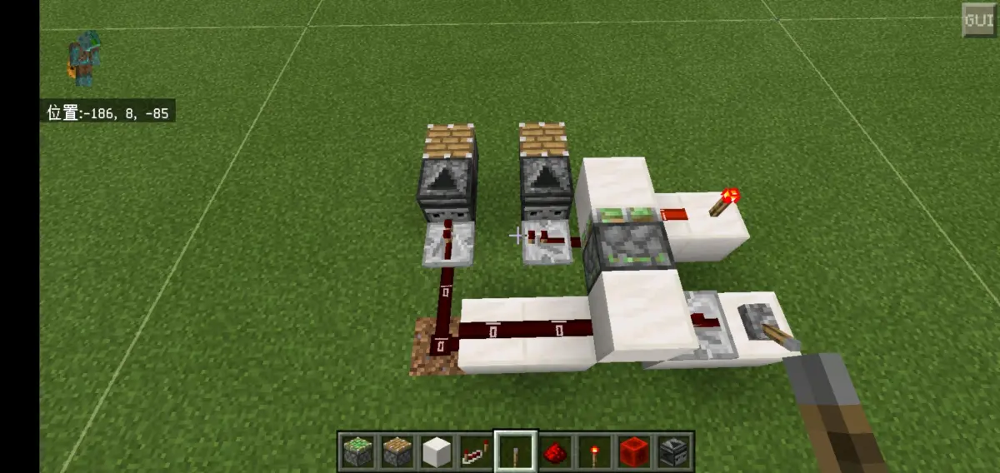
拉杆拉下，2个输出活塞同时推出；拉杆拉回，左边的输出活塞比右边的输出活塞早1rt推出。
从左往右依次计算：（这次用的是中继器接入，两路延时会抵消所以不在此计算里加上了）
拉杆拉下：
第一路中继器1rt+察2rt=3rt
第二路活塞推出通路0rt+中继器1rt+察2rt=3rt
故当活塞在推和拉可压线的方块时，推出通路的位置或拉回通路的位置有计划刻元件做输出情况下，那么不需要计算粘性活塞的运动延时，可以理解成粘性活塞运动延时和中继器延时重叠了。
拉杆拉回：
第一路中继器1rt+察2rt=3rt
第二路活塞收回断路1rt+中继器1rt+察2rt=4rt
故当活塞在推和拉可压线方块时，推出断路的位置或拉回断路的位置有计划刻元件做输出情况下，那么需要计算粘性活塞的运动延时。
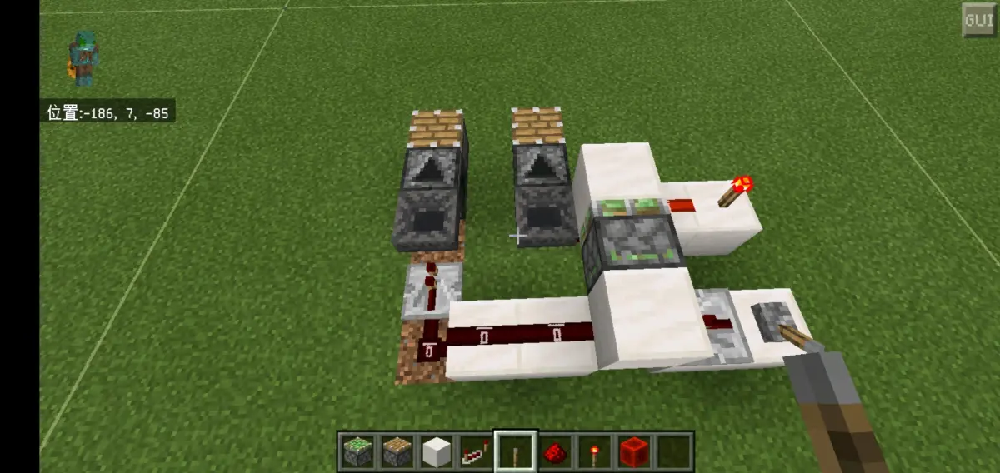
拉杆拉下，2个输出活塞同时推出；拉杆拉回，左边的输出活塞比右边的输出活塞早1rt推出。
从左往右依次计算：（这次用的是中继器接入，两路延时会抵消所以不在此计算里加上了）
拉杆拉下：
第一路中继器1rt+漏斗0rt+察2rt=3rt
第二路活塞推出通路0rt+启动延时1rt+漏斗0rt+察2rt=3rt
故当活塞在推和拉可压线的方块时，推出通路的位置或拉回通路的位置有同步类元件做输出情况下，那么不需要计算粘性活塞的运动延时，可以理解成粘性活塞运动延时和推拉带来的启动延时重叠了。
拉杆拉回：
第一路中继器1rt+漏斗0rt+察2rt=3rt
第二路活塞收回断路1rt+启动延时1rt+漏斗0rt+察2rt=4rt
故当活塞在推和拉可压线的方块时，推出断路的位置或拉回断路的位置有同步类元件做输出情况下，那么需要计算粘性活塞的运动延时和推拉带来的启动延时。
相信你可能有点绕，我们来将上面的理清理清：
首先是活塞推拉信号源给输出活塞/推拉特殊值方块时都发现推拉带来的启动延时/固有延时在上下沿都是存在的，无法消除。
其次是推出通/断路的位置，收回通/断路的位置有同步类元件/计划刻元件做输出，这是因为活塞推拉在不同情况下有多种接法，为了严谨性才补充的。
活塞在推出拉回都是瞬间更新的，因为接线的不同有许多不同的计算方法，大多都倾向于断开信号不计算活塞运动延时，但活塞推拉方块切压线却是一个很好的反例。
活塞也不是在所有情况下都是理想稳定的，这里收录了一些活塞推拉方块可能慢1rt，快1rt的情况：
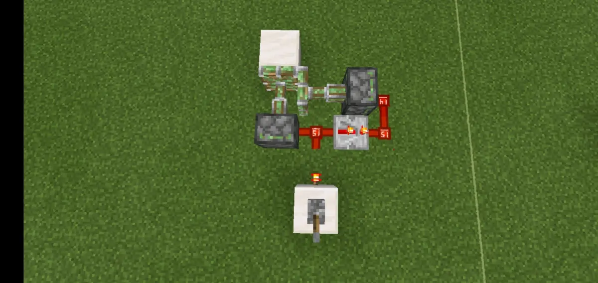
拉杆拉下，石英块被稳定拉回到右边的活塞位置。
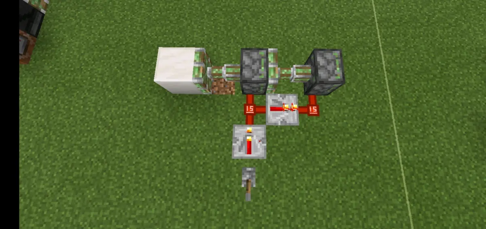
拉杆拉回，粘性活塞可能可以被粘性活塞收回。
可以发现，图1把中继器改成1档，拉回也是有可能的，但却不稳定，图2拉回粘性活塞也是有可能的，但却不稳定，一个刚到位的方块/活塞本身是可以被另一个活塞马上拉回的，但是有几率不稳。我们姑且认为这是活塞本身的特性，与理论无关。
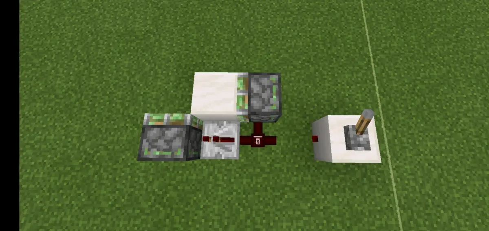
拉杆拉回，石英块被推出。
一个方块在推出到位后，大多数情况可以被另一个活塞立马继续推出。但很不荣幸，经过一定的实验证明，二次推出的活塞延时是不稳定的，但几率有些小。猜测是第一次推出的活塞运动干扰到了第二次推出的活塞，使第二次推出的活塞可能被莫名其妙延时了1rt才开始推出。我们姑且认为这是活塞本身的特性，与理论无关。
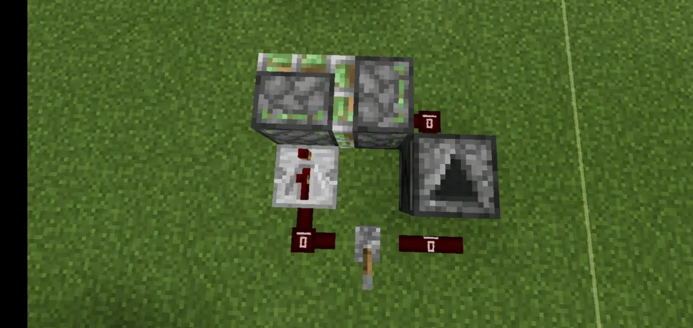
拉杆拉回，左活塞有可能被右活塞推出。
活塞在收回到位后，可以被另一个活塞立马推出，但却是不稳定的，中继器路活塞收回3rt的下沿，察路信号到达3rt下沿，理应推出但不稳定。所以如果是卡时序短脉冲是可能推出/不推出，如果是卡时序的持续信号，那么可能会延后1rt后开始推出；我们姑且认为这是活塞本身的特性，与理论无关。
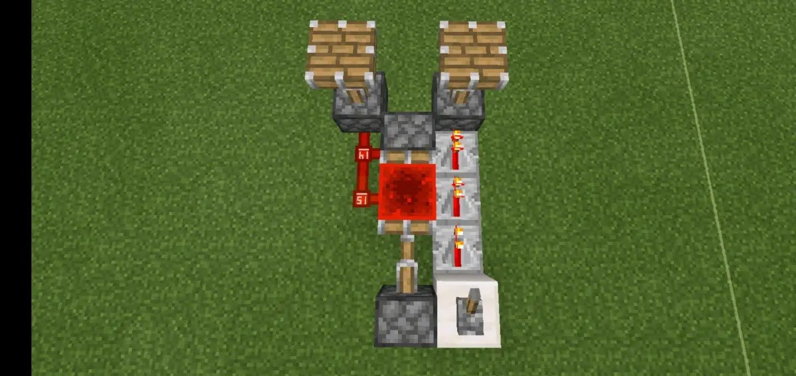
拉杆拉回，2个输出活塞有可能同时收回，有可能右边的比左边的输出活塞早1rt收回。
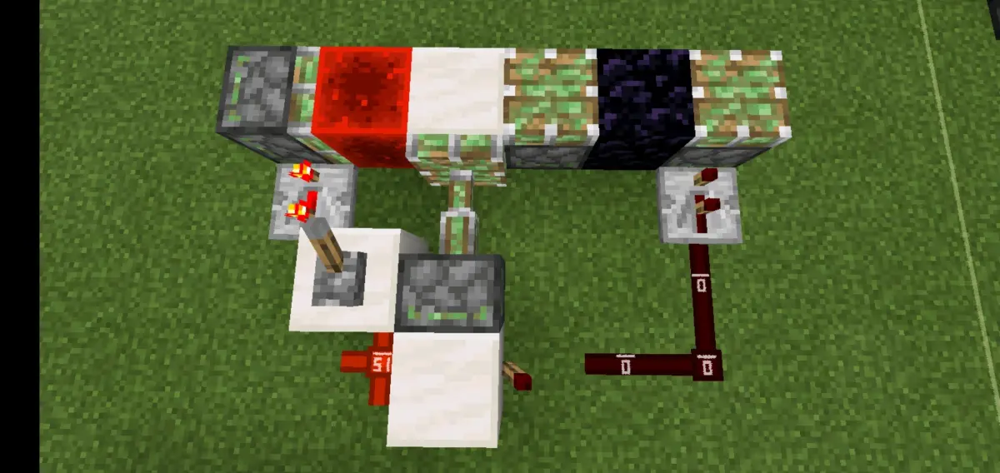
拉杆拉回，2个输出活塞有可能同时推出，有可能右边的比左边的输出活塞早1rt推出。
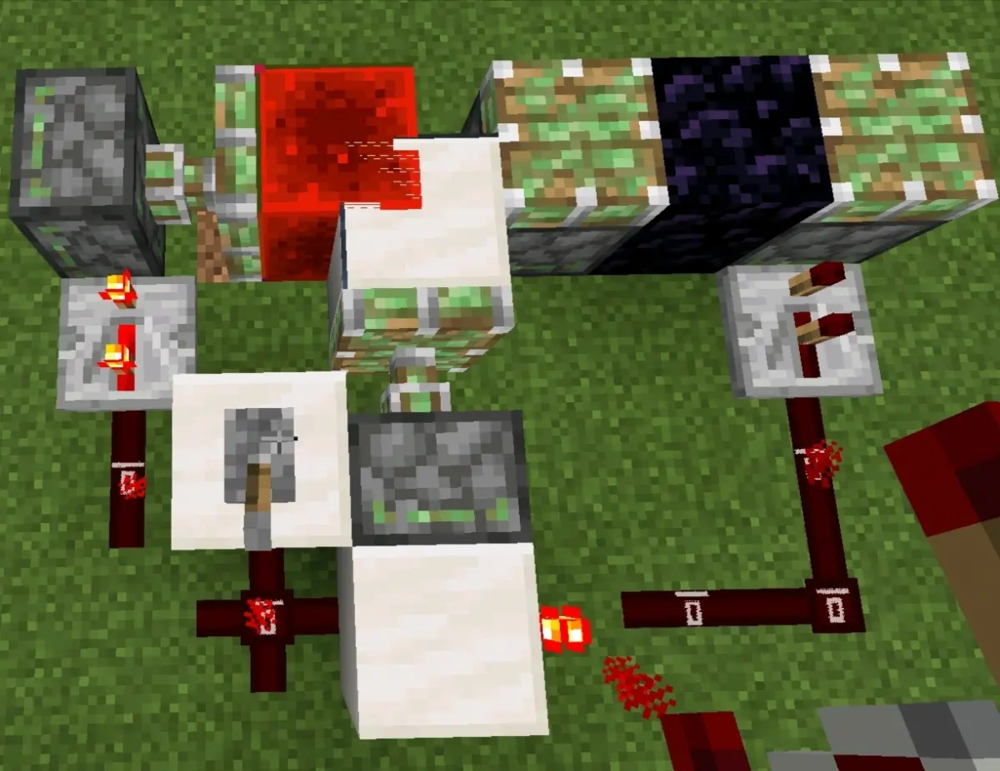
慢动作下的活塞运动（输出活塞同时推出情况）
我们重点分析下图2/3，左边的3档中继器为了石英块收回后将剩余的延时信号提供给推红石块的活塞，当出现慢动作下的活塞运动时可以发现它们是同时运动的，一个瞬间拉回，一个瞬间推出，所以收石英块的延时和推红石块的延时重叠了，那么第一路延时是拉杆接入启动延时1rt+推红石块/收石英块延时1rt+到位启动延时1rt=3rt，所以和另一路同时推出。但是却是不稳定的，可能会出现收石英块到位后才开始推红石块。我们姑且认为是活塞本身的特性，与理论无关。
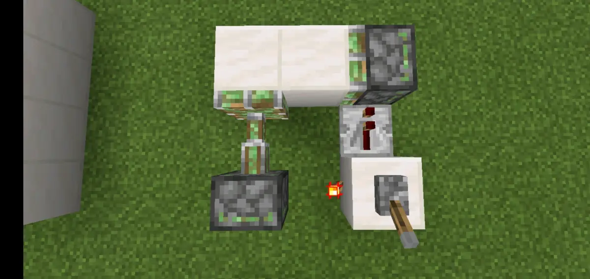
拉杆拉下，两个石英块可能会成功互换冲突位置。
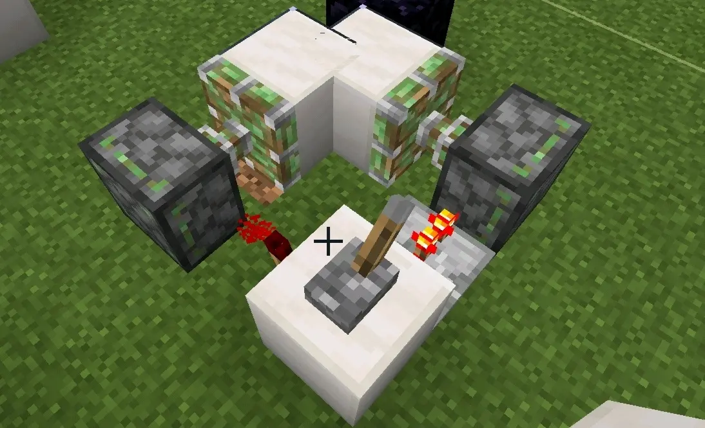
慢动作下的活塞运动。
可以看到慢动作下的活塞运动和上一个有黑曜石的版本一样，也有可能出现同时运动的推/拉成功方块互换位置。我们姑且认为是活塞本身的特性，与理论无关。
这两个实验电路可以发现一些共同点，一个是活塞卡时序可能成功互换方块位置/可能推爆，一个是加了黑曜石每次互换方块位置延时无法预知（参考点0-1之间跳）。
总的来说，当2个活塞处于对推/折推的冲突位置时，活塞有信号接入且满足推动条件，那么它可能可以和另一个冲突位置的活塞同时运动，也就是第一个活塞把方块拉回，另一个活塞可以立马推出进入空气位置。
接下来是一些常见问题和一些操作/布线的示例，尝试用上文提到的一些重要结论解释：
这是我上次写的察篇中评论区的一位老哥提出的问题，我觉得挺有意思的，因为察篇内容比较多没有写，活塞知识也没普及，索性就答应他放到活塞篇来讲。
这是他的原话：（bushi）
用侦测器去检测接上4rt时钟的活塞可以形成2rt周期的高频，而直接用侦测器去检测2rt时钟却做不到这么快，原因是什么?
在分析原因之前，我要向你们抱歉，察篇的内容没有写到察也有检测冷却时间cd这个概念的存在，这是我的疏忽大意，为了弥补漏缺现在先来看一张图：
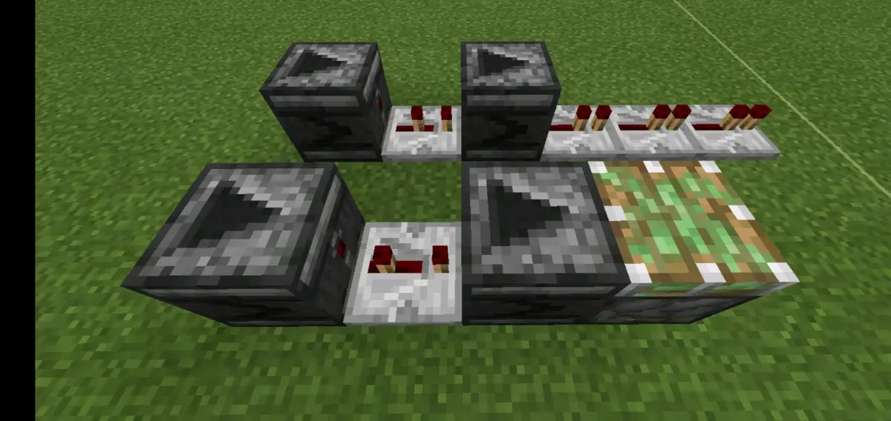
察 链
可以发现，第一条察链用的中继器是2档，输出的信号是1rt脉冲，第二条察链用的是3档中继器，输出1001信号，也就是两次信号。
我们将第一行代表经过的延时，第二行代表中继器脉冲长度（1有0无），○代表察检测延时，●代表察输出延时；察检测的是中继器，需要计算中继器的延时，所以○●都被延后一格。（不懂的察篇有讲）
[BE理论]观察者的宏观延时计算方法 站内专栏 »2t中继器的察链：
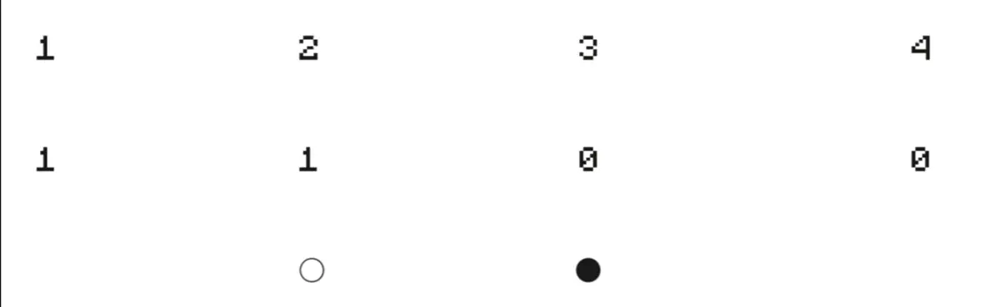
察只检测了一次，输出了一次，与事实符合。
3t中继器的察链：
察只检测了2次，输出了2次，与事实符合。
经过上面的实验证明，基岩版的观察者在检测中继器/比较器/红石火把/活塞时有1rt的检测冷却时间cd。
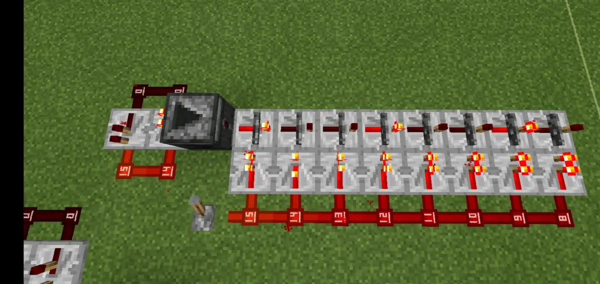
输出100循环波。
现在已经基本明了部分察的检测冷却cd，我们回过头来去思考刚开始的问题，我们先来分析检测2t时钟的情况。
如图我们将第一行代表经过的延时，第二行代表时钟，○代表察检测延时，●代表察输出延时；察检测的是中继器，需要计算中继器的延时，所以○●都被延后一格。
可见在2rt-3rt时，信号从0到1，没有继续检测，证实了那1rt内检测cd的存在。在3rt-4rt时，信号从1到0，已经过了检测cd时间内，因为检测是中继器，故○在延后一格的位置出现，符合输出100循环波。
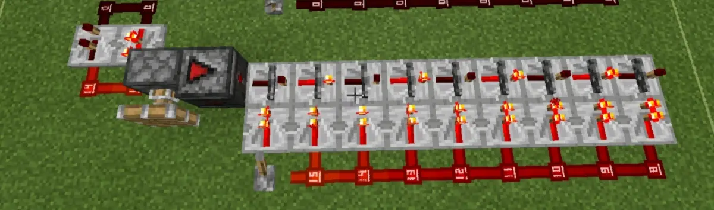
输出10循环波。
这次是4rt周期的时钟作用于活塞，所以一次有信号是2rt，根据上面活塞的理论，因为活塞推出后进入1rt的cd，所以2rt以内的信号给活塞都是一样的运动速度；
我们将第一行代表经过的延时，第二行代表时钟，第三行代表活塞推/拉/停留，○代表察检测延时，●代表察输出延时；察检测的是活塞，不需要计算活塞运动的延时，所以○和活塞推出同格。
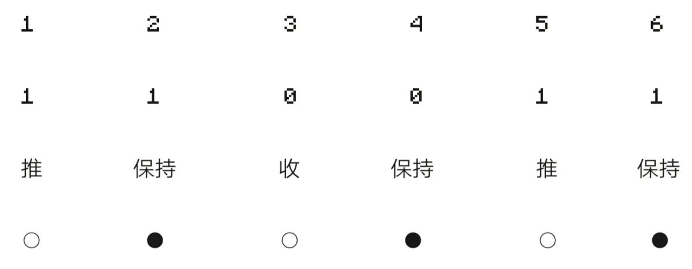
可见在2rt-3rt时，信号从1到0，已经过了检测cd时间内，故○立马在同格位置出现，符合输出10循环波。
====================================
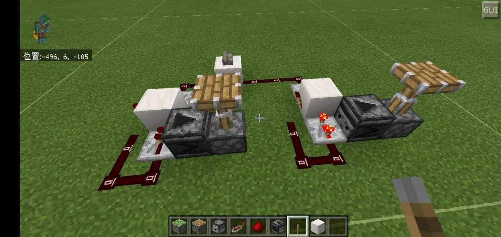
2个作用于活塞的最快高频，都是10001信号。
以下每行的代表意思参考上文：
察检测1档中继器：
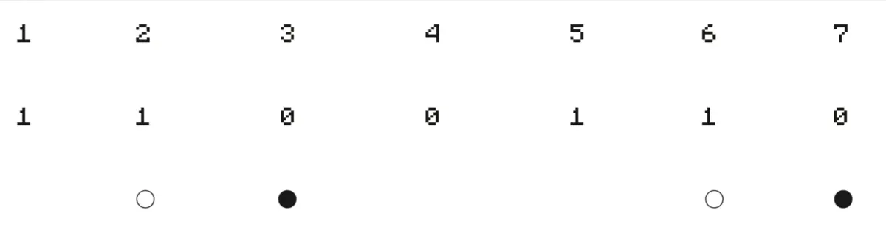
符合输出10001信号。
察检测3档中继器：
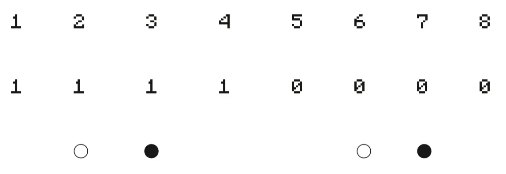
符合输出10001的信号。
接下来是活塞推拉信号源的应用：
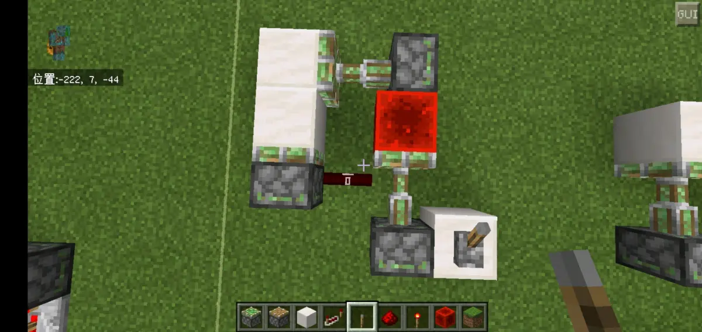
稳定的方块互换
这是我目前见过的卡时序里，最精最稳的方块互换布线。
拉杆拉回：
向上推拉的活塞路延时：
拉杆接入启动延时1rt+活塞收回1rt+红石块到位启动延时1rt+活塞推出1rt=4rt
向左推拉的活塞路延时：
拉杆接入启动延时1rt+活塞收回0rt+红石块到位启动延时1rt+活塞收回1rt=3rt
可见向左推拉的活塞在第3rt的下沿就收回完成，所以上推拉的活塞可以在第4rt的上沿稳定推出，完成互换位置。
拉杆拉下：
向上推拉的活塞延时：
拉杆接入启动延时1rt+活塞推出0rt+红石块到位启动延时1rt+活塞收回1rt=3rt
向左推拉的活塞延时：
拉杆接入启动延时1rt+活塞推出1rt+红石块到位启动延时1rt+活塞推出1rt=4rt
可见向上推拉的活塞在第3rt的下沿就收回完成，所以左推拉的活塞可以在第4rt的上沿稳定推出，完成互换位置。
可以发现，无论是拉杆拉回/拉下，总会有一路的活塞推红石块运动延时不计算，也总会有一路会相反需要计算，这就使得不计算运动延时的那一路可以提早将方块拉回，以便在下一个rt时另一个活塞可以稳定的将方块推出。
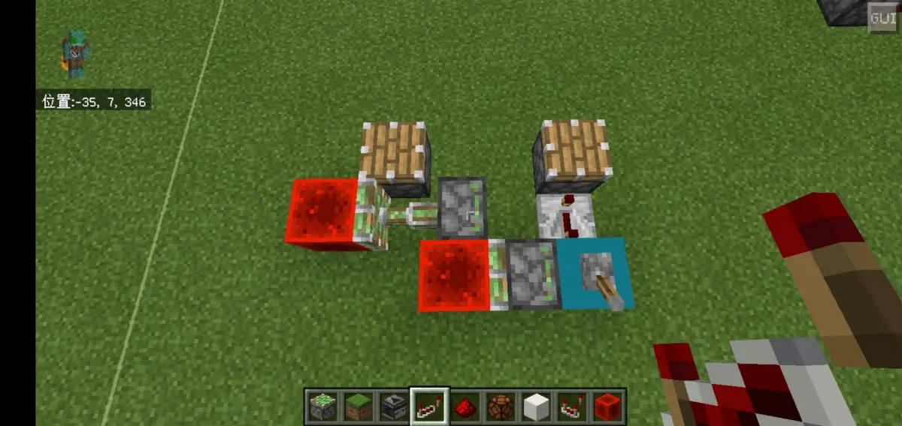
拉杆拉下，2输出活塞同时推出。
从左往右依次计算：
第一路：拉杆接入启动延时1rt+活塞推出0rt+红石块到位启动延时1rt+活塞收回1rt+红石块到位启动延时1rt=4rt
第二路：中继器4rt=4rt
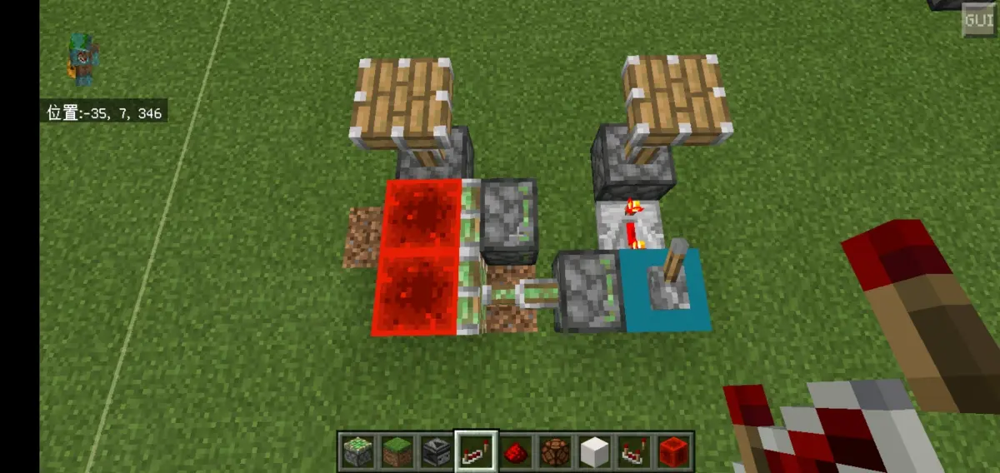
拉杆拉回，2输出活塞同时收回。
从左往右依次计算：
第一路：拉杆接入启动延时1rt+活塞收回1rt+红石块到位启动延时1rt+活塞推出0rt+红石块到位启动延时1rt=4rt
第二路：中继器4rt=4rt
可以看到，无论是拉杆拉下/拉回，都是同时推出/收回。2个粘性活塞在拉杆拉下/拉回中，总会有一个活塞推红石块运动延时不计算，也总会有一路会相反需要计算。这就使得每一次的延时都会被抵消掉，故拉杆上下沿延时一致。可以理解成上沿0+1=1，下沿1+0=1。
本篇到这里就结束了，谢谢您的学习。
有意见或问题欢迎请继续评论区留言谢谢
拜拜～